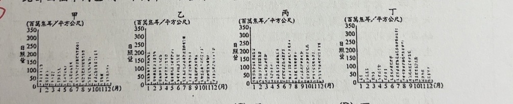
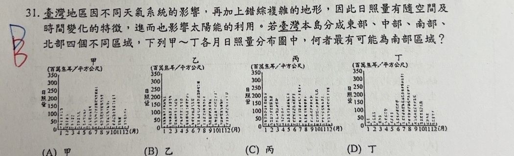

分享原卷｜第31題
完整原題

臺灣地區因不同天氣系統的影響，再加上錯綜複雜的地形，因此日照量有隨空間及時間變化的特徵，進而也影響太陽能的利用。若臺灣本島分成東部、中部、南部、北部四個不同區域，下列甲～丁各月日照量分布圖中，何者最有可能為南部區域？
(A) 甲
(B) 乙
(C) 丙
(D) 丁
先想一想，再查看答案、解說與原圖
原卷作答：原卷藍筆D，紅筆訂正B。
(B) 乙
逐項解析
| 選項與原句 | 判讀 | 句意與判斷理由 |
|---|---|---|
| (A) 甲 | 不選 | 冬季日照明顯偏少，不是南部全年日照分布的最佳圖。 |
| (B) 乙 | 應選 | 各月整體日照較高，冬季仍較多，最符合南部冬乾的特徵。 |
| (C) 丙 | 不選 | 需綜合冬季與全年表現比較，本題乙較符合南部。 |
| (D) 丁 | 不選 | 夏冬差異明顯、冬季偏低，不如乙符合南部乾季日照。 |
詳細說明與解題步驟
南部冬季位於東北季風較不易直接影響的背風側，冬季較乾、日照仍多；夏季雖有雨季，也有晴朗日照。因此選圖時要看全年各月的分布，不能只選某一個月最高的圖。
乙的各月日照量整體較高，冬季也維持一定水準，最符合臺灣南部的特徵，選B。甲、丁冬季日照明顯偏低，與南部乾季較多晴日的特性較不相符。丙雖也有日照，但全年整體表現不如乙符合本題南部判讀。圖為原卷各月日照量，單位保留為百萬焦耳／平方公尺，不將日照量誤換成日照時數。
核對註記：已實開真正上傳原卷及本題裁切成品，核對完整題幹、全部選項、必要材料與解說。未提供實際考試日期，日期取本題首次使用者訊息（台灣時間）；無冊次或課次證據，歸綜合。
原圖（僅本題）
